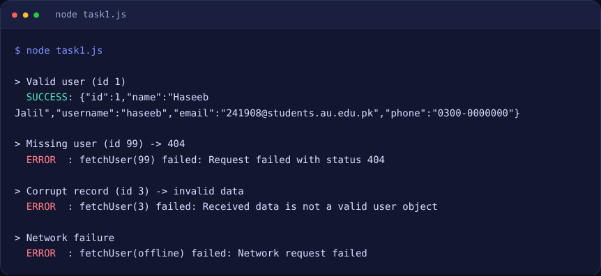
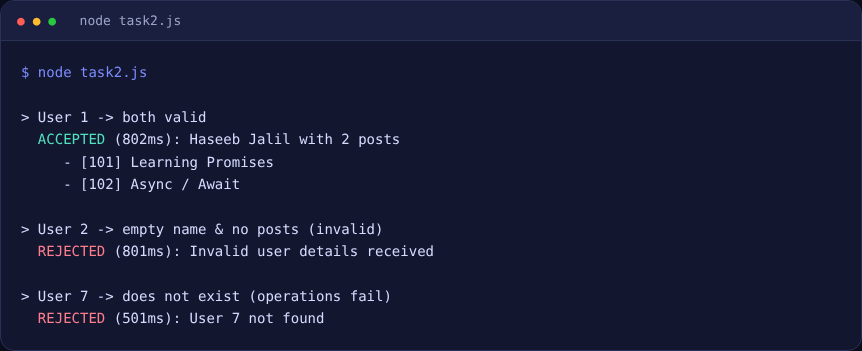

1
Async / Await — Fetch a User
An async function that fetches a user from an API and returns a valid user object on success. If the request fails, the status is bad, or the data is not a valid user, it throws a clear error.
/* ------------------------------------------------------------------
Lab 6 - Task 1
Async / Await: fetch a user from an API.
- Resolves with a VALID user object when the fetch succeeds.
- Throws (rejects) with a meaningful error when it fails.
Student: Haseeb Jalil | Reg No: 241908
------------------------------------------------------------------- */
const API_BASE = "https://jsonplaceholder.typicode.com";
// Set to true to hit the real API (needs internet). false = built-in mock API,
// which behaves the same way (delay, 200 / 404 / network failure) so the
// output is repeatable.
const USE_REAL_API = false;
/* ---------- tiny mock of an API (used when USE_REAL_API = false) ---------- */
const MOCK_USERS = {
1: { id: 1, name: "Haseeb Jalil", username: "haseeb", email: "241908@students.au.edu.pk", phone: "0300-0000000" },
2: { id: 2, name: "Ayesha Khan", username: "ayesha", email: "ayesha@example.com", phone: "0311-1111111" },
3: { id: 3, name: "Bilal Ahmed", username: "bilal", email: "not-an-email", phone: "0322-2222222" }, // corrupt record
};
function mockFetch(url) {
return new Promise((resolve, reject) => {
setTimeout(() => {
if (url.includes("offline")) return reject(new TypeError("Network request failed"));
const id = Number(url.split("/").pop());
const user = MOCK_USERS[id];
if (!user) return resolve({ ok: false, status: 404, json: async () => ({}) });
resolve({ ok: true, status: 200, json: async () => user });
}, 400);
});
}
const request = (url) => (USE_REAL_API ? fetch(url) : mockFetch(url));
/* ---------- validation: is this a real, usable user object? ---------- */
function isValidUser(u) {
return (
u !== null &&
typeof u === "object" &&
Number.isInteger(u.id) && u.id > 0 &&
typeof u.name === "string" && u.name.trim().length > 0 &&
typeof u.email === "string" && /^\S+@\S+\.\S+$/.test(u.email)
);
}
/* ---------- the async / await function ---------- */
async function fetchUser(id) {
try {
const response = await request(`${API_BASE}/users/${id}`);
if (!response.ok) {
throw new Error(`Request failed with status ${response.status}`);
}
const user = await response.json();
if (!isValidUser(user)) {
throw new Error("Received data is not a valid user object");
}
return user; // success -> valid user object
} catch (err) {
// failure -> propagate a clear error to the caller
throw new Error(`fetchUser(${id}) failed: ${err.message}`);
}
}
/* ---------- demo ---------- */
async function main(log = console.log) {
const cases = [
{ label: "Valid user (id 1)", id: 1 },
{ label: "Missing user (id 99) -> 404", id: 99 },
{ label: "Corrupt record (id 3) -> invalid data", id: 3 },
{ label: "Network failure", id: "offline" },
];
for (const c of cases) {
log(`> ${c.label}`);
try {
const user = await fetchUser(c.id);
log(" SUCCESS:", JSON.stringify(user));
} catch (err) {
log(" ERROR :", err.message);
}
log("");
}
}
if (typeof module !== "undefined") module.exports = { fetchUser, isValidUser, main };
if (typeof window !== "undefined") window.Task1 = { fetchUser, isValidUser, main };
if (typeof require !== "undefined" && require.main === module) main();
Press “Run” to execute task1.js in your browser…

Output screenshot — node task1.js
2
Promise.all — Validate Two Async Results
Two asynchronous operations (user details and user posts) run in parallel through Promise.all. The main promise is accepted only when both results are valid, otherwise it is rejected.
/* ------------------------------------------------------------------
Lab 6 - Task 2
Promise.all: run two async operations together, then accept or reject
the combined promise depending on whether BOTH fetched results are valid.
Student: Haseeb Jalil | Reg No: 241908
------------------------------------------------------------------- */
const delay = (ms) => new Promise((r) => setTimeout(r, ms));
/* ---------- async operation #1: fetch user details ---------- */
function fetchUserDetails(id) {
return delay(500).then(() => {
const users = {
1: { id: 1, name: "Haseeb Jalil", email: "241908@students.au.edu.pk" },
2: { id: 2, name: "", email: "broken@example.com" }, // invalid: empty name
};
if (!(id in users)) throw new Error(`User ${id} not found`);
return users[id];
});
}
/* ---------- async operation #2: fetch that user's posts ---------- */
function fetchUserPosts(id) {
return delay(800).then(() => {
const posts = {
1: [
{ id: 101, userId: 1, title: "Learning Promises", body: "Promise.all waits for everything." },
{ id: 102, userId: 1, title: "Async / Await", body: "Cleaner than .then chains." },
],
2: [], // invalid: no posts
};
if (!(id in posts)) throw new Error(`Posts for user ${id} not found`);
return posts[id];
});
}
/* ---------- validators ---------- */
const validDetails = (u) =>
!!u && Number.isInteger(u.id) && typeof u.name === "string" && u.name.trim() !== "" &&
typeof u.email === "string" && /^\S+@\S+\.\S+$/.test(u.email);
const validPosts = (p) =>
Array.isArray(p) && p.length > 0 &&
p.every((x) => x && typeof x.title === "string" && x.title.trim() !== "");
/* ---------- main promise built on Promise.all ---------- */
function loadUserDashboard(id) {
return Promise.all([fetchUserDetails(id), fetchUserPosts(id)]).then(
([details, posts]) => {
if (!validDetails(details)) throw new Error("Invalid user details received");
if (!validPosts(posts)) throw new Error("Invalid posts received");
return { details, posts }; // ACCEPT: both are valid
}
); // REJECT: either operation failed OR a validation above threw
}
/* ---------- demo ---------- */
async function main(log = console.log) {
const cases = [
{ label: "User 1 -> both valid", id: 1 },
{ label: "User 2 -> empty name & no posts (invalid)", id: 2 },
{ label: "User 7 -> does not exist (operations fail)", id: 7 },
];
for (const c of cases) {
log(`> ${c.label}`);
const t0 = Date.now();
try {
const result = await loadUserDashboard(c.id);
log(` ACCEPTED (${Date.now() - t0}ms): ${result.details.name} with ${result.posts.length} posts`);
result.posts.forEach((p) => log(` - [${p.id}] ${p.title}`));
} catch (err) {
log(` REJECTED (${Date.now() - t0}ms): ${err.message}`);
}
log("");
}
}
if (typeof module !== "undefined") module.exports = { loadUserDashboard, main };
if (typeof window !== "undefined") window.Task2 = { loadUserDashboard, main };
if (typeof require !== "undefined" && require.main === module) main();
Press “Run” to execute task2.js in your browser…

Output screenshot — node task2.js